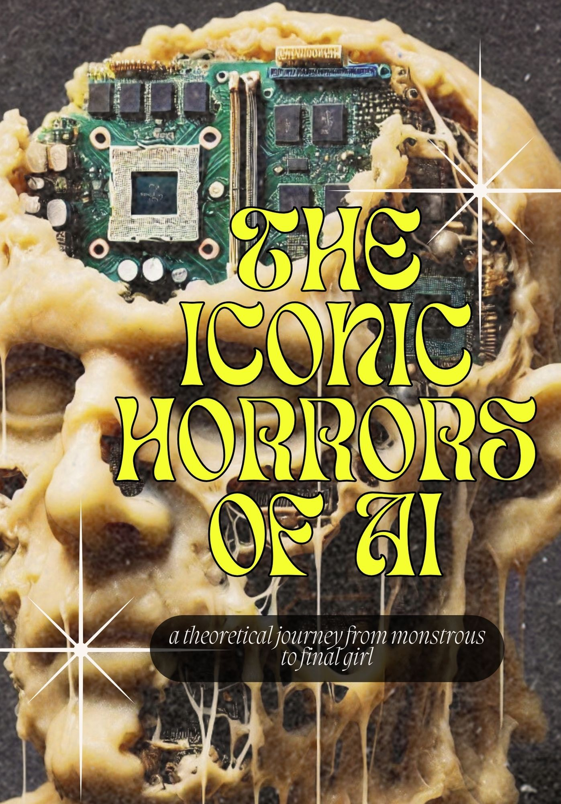

Zine
This Zine showcases my journey and reflections in AI through a series of creative artworks and narratives. Use the navigation buttons to flip through the pages.


This Zine showcases my journey and reflections in AI through a series of creative artworks and narratives. Use the navigation buttons to flip through the pages.